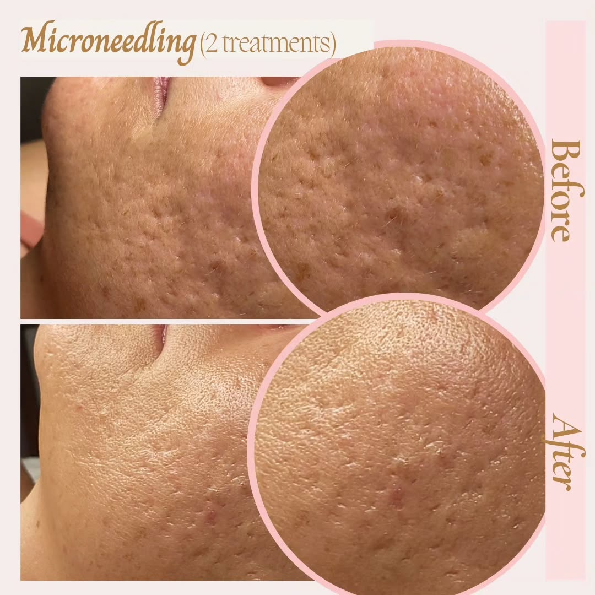

Microneedling
Stimulate collagen and elastin production to visibly reduce fine lines, scars, and enlarged pores. After just two sessions, your skin will look smoother, firmer, and more even.
At Ely Aesthetics, our expert spa treatments blend cutting‑edge science with soothing luxury—so you leave feeling renewed, naturally.
Book Your AppointmentStimulate collagen and elastin production to visibly reduce fine lines, scars, and enlarged pores. After just two sessions, your skin will look smoother, firmer, and more even.
A 4‑step “cleanse, extract, hydrate, protect” protocol that flushes out impurities and infuses antioxidants + peptides for an instant glow and lasting skin health.
Gently remove surface dead skin and fine “peach fuzz” with a medical‑grade blade—leaving an ultra‑smooth canvas that boosts product absorption and reveals brighter skin.
Your skin is unique—that’s why every facial is tailored with advanced serums and masks to address hydration, sensitivity, or pigmentation concerns, followed by a calming massage.